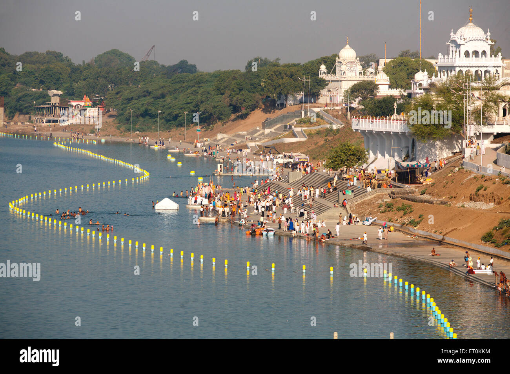
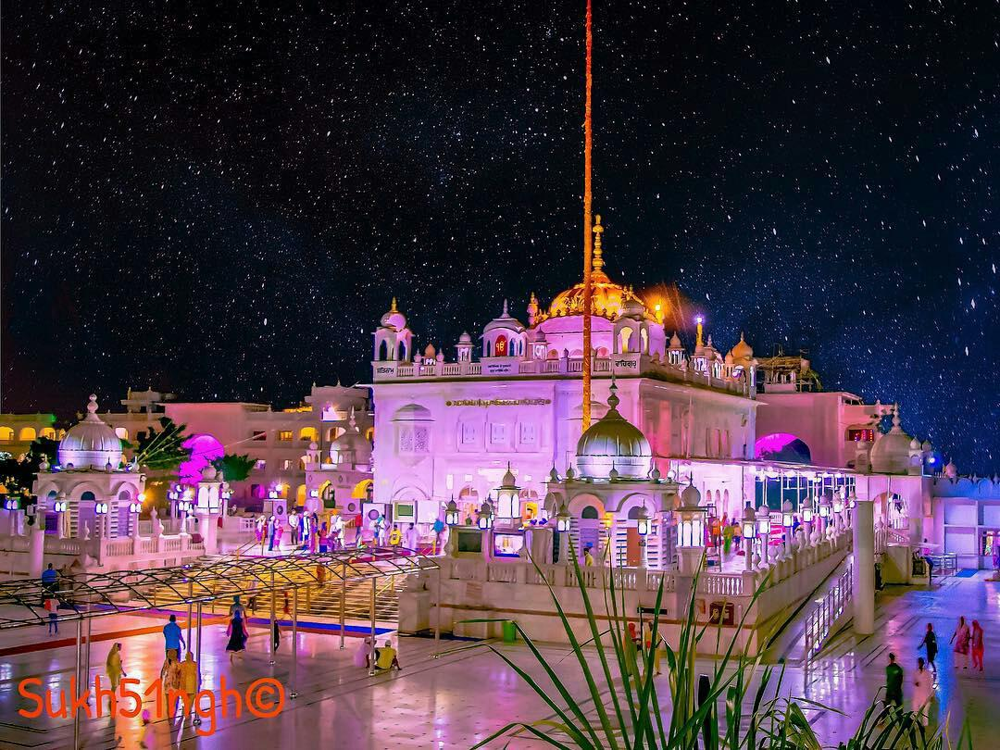
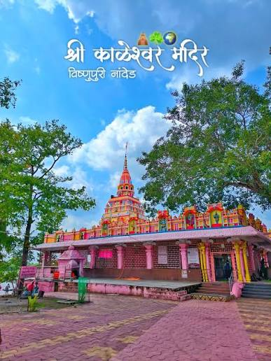
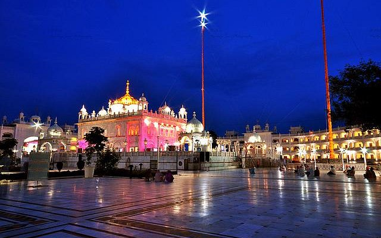
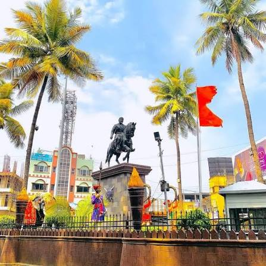
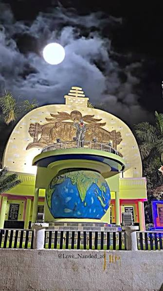
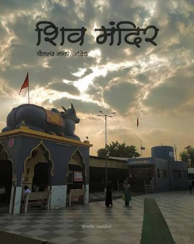
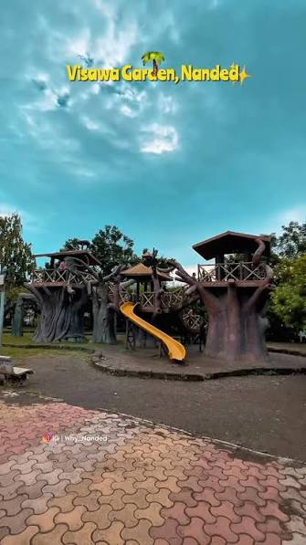

Explore all 16 Talukas, spiritual heritage, ancient historical background, top educational institutions, and tourist guide of Nanded.
Discover what makes Nanded a uniquely captivating destination for travelers, pilgrims, and students.
Home to Takht Sachkhand Sri Hazur Sahib, drawing millions of global devotees.
From Sahastrakund waterfalls to ancient forts and holy shrines across all regions.
Renowned for premier institutes like SGGSIET and SRTM University in Vishnupuri.
Nanded district comprises 16 dynamic talukas, each boasting unique historical landmarks, rivers, religious shrines, and cultural significance.

Tracing the glorious milestones of Nanded across ancient, medieval, and modern eras.
Nanded finds mentions in ancient Hindu scriptures and Puranas, ruled by various dynasties including the Nanda Empire, Mauryas, and Satavahanas.
The region flourished under the rule of the Yadavas of Devagiri, followed by Islamic dynasties including the Delhi Sultanate and Bahmani Sultanate.
In 1708, the 10th Sikh Guru, Guru Gobind Singh Ji, arrived in Nanded and made it his permanent abode, establishing Takht Sachkhand Sri Hazur Sahib.
Nanded remained part of the Princely State of Hyderabad under the Nizams until it was liberated during Operation Polo in 1948 and integrated into India.
Explore every single taluka of Nanded district and discover its special attractions.
Sacred spaces that instill profound peace, faith, and divinity.

One of the five holy takhts in Sikhism, commemorating the sacred site of Guru Gobind Singh Ji's heavenly departure.

An ancient historical temple devoted to Lord Shiva, situated peacefully along the holy Godavari River.
Architectural wonders and scenic landmarks worth exploring.

Encircled by the Godavari River waters on three sides, offering scenic beauty and historical charm.
Peaceful riverbanks hosting evening aartis and offering a serene atmosphere for visitors.
Leading institutions offering world-class technical, medical, arts, science, and higher education.
Shri Guru Gobind Singhji Institute of Engineering and Technology is Nanded's premier technical institute renowned for excellence and high-end placements.
Swami Ramanand Teerth Marathwada University is the core regional university offering postgraduate education and research programs.
Leading government medical college and hospital providing top-tier MBBS and postgraduate medical training.
One of the oldest and largest multi-faculty degree colleges in the region offering diverse undergraduate and postgraduate streams.
A highly reputed institution dedicated exclusively to advanced science courses, laboratory facilities, and scientific research.
Mahatma Gandhi Mission's campus offering quality technical and professional education with modern infrastructure.
Located in Vazirabad, it is the top government institute for technical diploma courses after 10th standard.
A trusted and historic institution offering robust undergraduate programs in Arts, Commerce, and Management studies.
A prominent government institution providing specialized education and clinical training in Ayurvedic medical sciences.
A captured look into the scenic beauty, divinity, and heritage of Nanded. (Click to zoom)





Immerse yourself in the vibrant traditions and delectable flavors of Nanded.
Nanded exhibits a beautiful confluence of Maratha and Sikh traditions. Major festivals celebrated with great enthusiasm include Hola Mohalla, Diwali, Ganesh Chaturthi, and Dussehra, reflecting communal harmony and rich heritage.
The local culinary experience features authentic Maharashtrian delicacies like Puran Poli, Zunka Bhakri, along with traditional langar prasad at Hazur Sahib which offers spiritual fulfillment and unmatched hospitality.
Essential tips, transit options, and exact geographical location of Nanded.
Locate Nanded, Maharashtra easily on the map:
Have questions or feedback? Send us a message directly.
Project created with dedication for academic evaluation.
BCA Final Year Student
Degree Course:
Project Title:
Core Technologies:
Design Architecture: